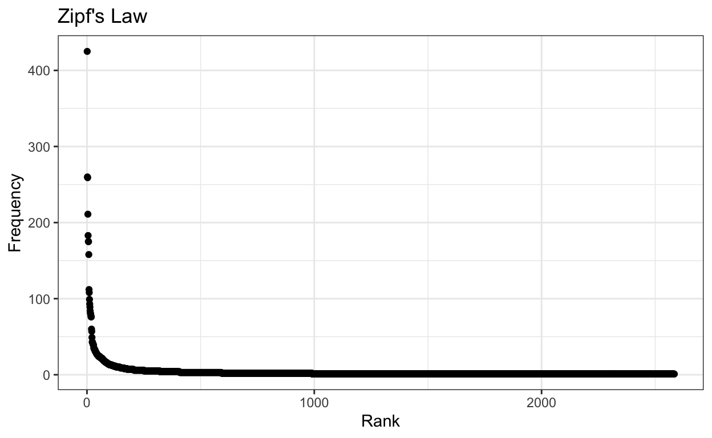
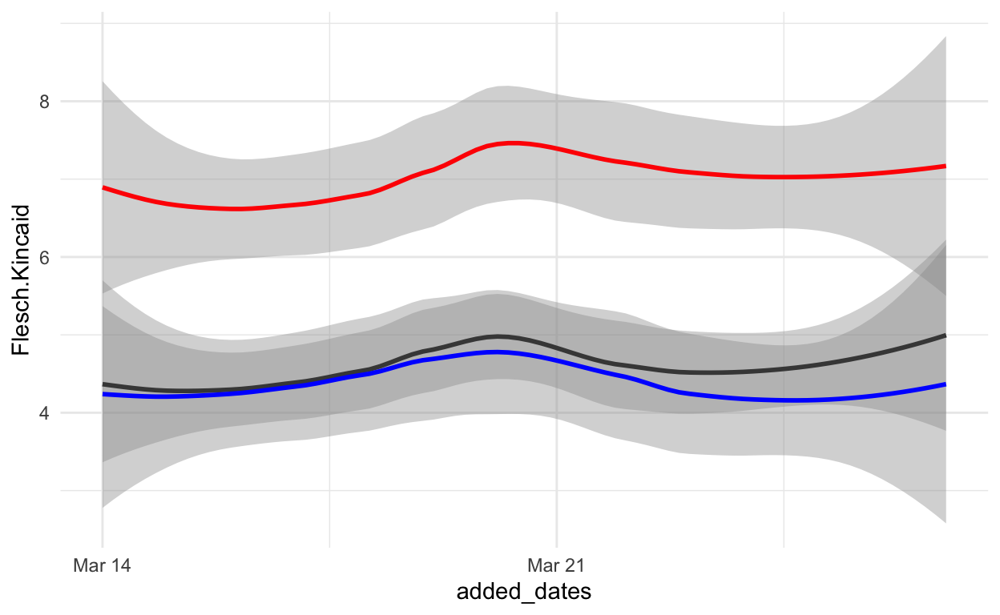
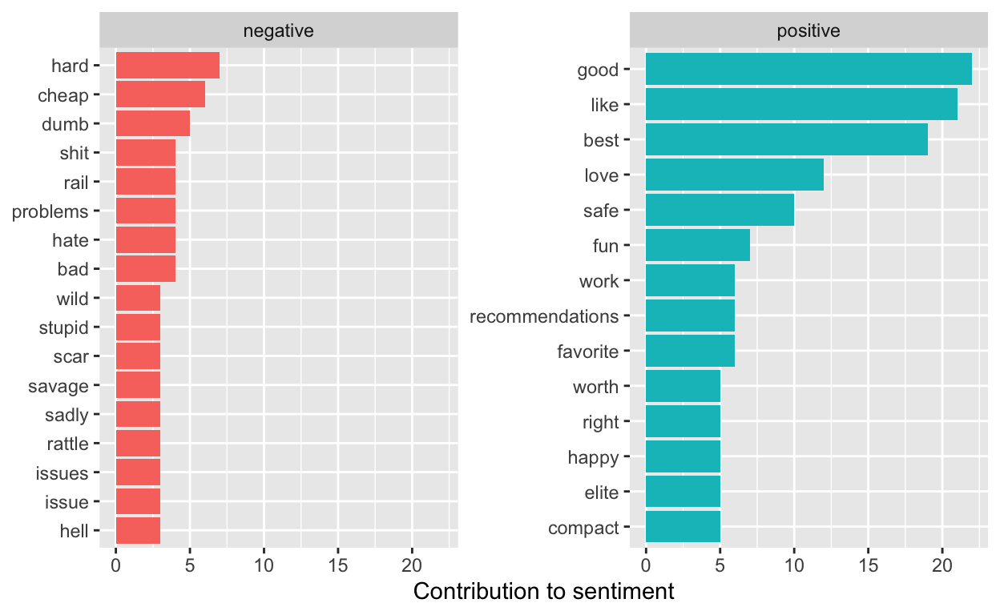

Blog Post 3 and 4:
Third Blog Post and Continuation
Explanation: This post covers material from week 5 pre-processing, week 6 representing text, and week 7 dictionary methods. In this case I have slightly modified the data I am working with, this week I am using 1000 new posts for a dictionary analysis rather than the “top” posts to see if there is a tangible difference in content.
Inital Loading and Processing
Explanation: My code below illustrates how I initially got my information from reddit by scraping. In this case I used RedditExtractoR. The author of this packages describes it as a minimalist r wrapper it scrapes a limited number of posts from reddit. The api on reddit itself only allows 60 requests per minute. In this case I chose posts that were “new” as of march 26 2022 at 11:17 P.M. This has resulted in 980 reddit posts, this subreddit is described as “Firearms and related articles” and much of the subreddit is descriptions of, reviews, and highlights of firearms owned by users.
# New_guns_urls <- find_thread_urls(subreddit="guns", sort_by="new")
loadRData <- function(fileName){
#loads an RData file, and returns it
load(fileName)
get(ls()[ls() != "fileName"])
}
New_guns_urls_df <- loadRData("/Users/noahmilstein/Desktop/Spring 2022/Networks/Git_Projects/DACCS/nmilsteinuma.github.io/docs/_posts/2022-03-26-text-as-data-blog-post-4/New_reddit_posts_3_26.RData")
str(New_guns_urls_df)
'data.frame': 980 obs. of 7 variables:
$ date_utc : chr "2022-03-15" "2022-03-15" "2022-03-15" "2022-03-15" ...
$ timestamp: num 1.65e+09 1.65e+09 1.65e+09 1.65e+09 1.65e+09 ...
$ title : chr "With tiny ar15s and mcx/similar, where does a pcc fit in the arsenal now?" "I still don\031t feel like this is good enough. Ha. Anyone else this anal about this stuff?" "Best Home Defense Round in 5.56?" "5\0365*5/555&53 5\r50535.5\"5-" ...
$ text : chr "With the advent of small ar15s and similar foldy boys like the mcx, where does the pcc fit in now?\n\nSeems tha"| __truncated__ "" "I'm looking for some defensive rounds for my AR-15 that are reliable. Lately I've been shooting 55 Grain XTac g"| __truncated__ "" ...
$ subreddit: chr "guns" "guns" "guns" "guns" ...
$ comments : num 32 23 73 12 51 29 25 13 32 7 ...
$ url : chr "https://www.reddit.com/r/guns/comments/teruk1/with_tiny_ar15s_and_mcxsimilar_where_does_a_pcc/" "https://www.reddit.com/r/guns/comments/ter4zi/i_still_dont_feel_like_this_is_good_enough_ha/" "https://www.reddit.com/r/guns/comments/ter48v/best_home_defense_round_in_556/" "https://www.reddit.com/r/guns/comments/teqkl1/5\0365*5/555&53_5\r50535.5\"5-/" ...Conversion From Data Frame to Corpus
Explanation: Below I have processed my initial dataframe from Reddit into a corpus and saved a summary of the resulting data.
Broad Characteristics
Explanation: In order to clean the documents for pre-processing and analysis I have removed punctuation, converted to lowercase and removed stopwords. Though the language of firearms is often associated with punctuation, such as 5.56, 3.57, and a variety of other calibers, which represent the diameter of the barrel required to fire each ammunition. However, losing the punctuation in caliber and firearm titles would not reduce their comprehensibility in analysis if they retain their form as 5.56 and 556 can be considered equally while reducing the complexity of tokens and potentially even sentences. Converting the documents to lowercase can also simplifies the data. However, for my inital analysis I will just being making a lowercase document feature matrix and a more edited one.
new_guns_corpus_dfm_tl<-tokens(new_guns_corpus) %>% dfm(tolower=TRUE)
new_guns_corpus_dfm_punct_tl_sw <- tokens(new_guns_corpus,
remove_punct = TRUE,) %>%
dfm(tolower=TRUE) %>%
dfm_remove(stopwords('english'))
Top features
Explanation: Examining the top 20 features below we see a fairly predictable set of response, as may be expected from the gun subreddit, the most used word is gun. Rifle and pistol are also in the top 20. Individual letters such as “ar”, “s”, and “m” appear frequently as they are commonly used designations for types of firearms or model names, ar-12, ar-15, m-4, m-16, m1911, 5-mm, and s559, s-12 and other designations. This indicates that these numbers are valuable, if difficult to comprehend on their own. With no punctuation removed the first 20 features are not informative.
topfeatures(new_guns_corpus_dfm_tl, 20)
. ? a the my , i to for and is
425 260 259 211 183 175 175 158 112 108 99
in it / of with gun this on first
93 89 84 81 80 78 76 76 60 topfeatures(new_guns_corpus_dfm_punct_tl_sw, 20)
gun first new 22 can s question
78 60 57 43 41 35 31
rifle just amp help anyone ar pistol
29 29 28 27 26 26 26
time guns know good got m
25 24 23 22 22 22 World Cloud
Explanation: Though not necessarily statistically informative, the wordcloud below can give some sense of comparative frequency using the limit of minimum count being 6. Reading through these can give a sense of both the communal nature of the forum in asking for recommendations, but also the importance of the word purchase and other words associated with working with, and buying firearms. In the case of the only lowercased data we can gather much less information.
set.seed(123456)
textplot_wordcloud(new_guns_corpus_dfm_tl, min_count = 12, random_order = T, rotation = 0)
set.seed(123456)
textplot_wordcloud(new_guns_corpus_dfm_punct_tl_sw, min_count = 6, random_order = T, rotation = 0)

Types, Tokens, and Sentances
Types
Explanation: The gun corpus summary gives 3 counting categories that we can interpret in order to get a sense of the complexity of the documents that we are using. Looking at the number of types on average we see a mean of 9.18 and qunantiles that indicate a range of 2-45 with 50% being between 4 and 13 types.
mean(new_guns_corpus_summary$Types)
[1] 9.18quantile(new_guns_corpus_summary$Types)
0% 25% 50% 75% 100%
2.0 4.0 7.5 13.0 45.0 Tokens
Explanation: Tokens are relatively similar to types in this case. Here there is a mean of 9.72 but a range of 2-55 with the middle 50% ranging from 4-13 tokens, as was the case for types.
mean(new_guns_corpus_summary$Tokens)
[1] 9.72quantile(new_guns_corpus_summary$Tokens)
0% 25% 50% 75% 100%
2 4 8 13 55 Sentances
Explanation: As is indicated below, it appears that the number of sentences in each post is generally one. Arroding to the qunatile statistics the most sentences in any post
mean(new_guns_corpus_summary$Sentences)
[1] 1.18quantile(new_guns_corpus_summary$Sentences)
0% 25% 50% 75% 100%
1 1 1 1 3 Word counts
Explanation: Looking at word counts we see a similar trend reflected where including stopwords and punctuation decreases the quality of data as little information but punctuation and stopwords are included.
word_counts_new_1 <- as.data.frame(sort(colSums(new_guns_corpus_dfm_tl),dec=T))
colnames(word_counts_new_1) <- c("Frequency")
word_counts_new_1$Rank <- c(1:ncol(new_guns_corpus_dfm_tl))
head(word_counts_new_1)
Frequency Rank
. 425 1
? 260 2
a 259 3
the 211 4
my 183 5
, 175 6word_counts_new <- as.data.frame(sort(colSums(new_guns_corpus_dfm_punct_tl_sw),dec=T))
colnames(word_counts_new) <- c("Frequency")
word_counts_new$Rank <- c(1:ncol(new_guns_corpus_dfm_punct_tl_sw))
head(word_counts_new)
Frequency Rank
gun 78 1
first 60 2
new 57 3
22 43 4
can 41 5
s 35 6Zipf’s Law
Explanation: As can be seen from the frequency graphs below, Ziph’s Law of inverse proportion. In this case a words rank in freqency is inversely prorportional to the number of times it is observed. Though the uncleaned dataset has far more frequency for its most common words (much of which is punctuation) it appears to follow the law.
ggplot(word_counts_new, mapping = aes(x = Rank, y = Frequency)) +
geom_point() +
labs(title = "Zipf's Law", x = "Rank", y = "Frequency") +
theme_bw()
ggplot(word_counts_new_1, mapping = aes(x = Rank, y = Frequency)) +
geom_point() +
labs(title = "Zipf's Law", x = "Rank", y = "Frequency") +
theme_bw()

Data Trimming
Explanation: Much of what I do here will be explained in the code and results. Many words appear with a minimum frequency of 4, though non are included in 10% and only 3 words are included in 5%. At a level of 2.5% we get 4 words.
# First I trim the data to only include words that appear at least 4 times
smaller_dfm_4_freq <- dfm_trim(new_guns_corpus_dfm_punct_tl_sw, min_termfreq = 4)
# Next I will look at proportions are see if there are words that are seen in
# More than 10% and 5% of documents
smaller_dfm_10_p <- dfm_trim(smaller_dfm_4_freq, min_docfreq = 0.1, docfreq_type = "prop")
smaller_dfm_5_p <- dfm_trim(smaller_dfm_4_freq, min_docfreq = 0.05, docfreq_type = "prop")
smaller_dfm_2.5_p <- dfm_trim(smaller_dfm_4_freq, min_docfreq = 0.025, docfreq_type = "prop")
Data Readability
Explanation: Before making general modifications to the data, it is valuable to also get a sense of readability, as in week 5. In this case we will calculate readability scores based on 3 different measures, FOG, Coleman Liau, and Flesch Kincaid. Though this step will not indicate what sort of pre-processing is best, or how the data should be reduced, it does give us some insight into the complexity of the language in our data. In this case we just observe the readability based on the post number.
readability_new_guns <- textstat_readability(new_guns_corpus,
measure = c("Flesch.Kincaid", "FOG", "Coleman.Liau.grade"))
# add in a chapter number
readability_new_guns$reddit_post <- c(1:nrow(readability_new_guns))
# plot results
ggplot(readability_new_guns, aes(x = reddit_post)) +
geom_line(aes(y = Flesch.Kincaid), color = "black", alpha=0.3) +
geom_line(aes(y = FOG), color = "red", alpha=0.3) +
geom_line(aes(y = Coleman.Liau.grade), color = "blue", alpha=0.3) +
theme_bw()
Explanation: In this part we will add dates to our data to see how the complexity changes over time or if it was relatively constant. As can be seen below, the amount of complexity in the data varies more smoothly when the data are sorted by data and not arbitrarily by their post number, in this case all 3 complexity method exhibit similar trends.
readability_new_guns$added_dates <- as.Date(New_guns_urls_df$date_utc)
ggplot(readability_new_guns, aes(x = added_dates)) +
geom_smooth(aes(y = Flesch.Kincaid), color = "black") +
geom_smooth(aes(y = FOG), color = "red") +
geom_smooth(aes(y = Coleman.Liau.grade), color = "blue") +
theme_minimal()

Explanation: Looking at the readability of the we see that all correlations between the methods of complexity measurement are similar except of FOG and Coleman Liau, however the graphs above do indicate some similarity in trend between them, though not direct correlation in their estimates potentially.
cor(readability_new_guns$Flesch.Kincaid, readability_new_guns$FOG, use = "complete.obs")
[1] 0.8321041cor(readability_new_guns$Flesch.Kincaid, readability_new_guns$Coleman.Liau.grade, use = "complete.obs")
[1] 0.751674cor(readability_new_guns$FOG, readability_new_guns$Coleman.Liau.grade, use = "complete.obs")
[1] 0.5859859Pre-processing Before Reduction and Co-Occurance
Explanation: Next I used the factorial_preprocessing() command to both use n-grams processing and use an infrequent term threshold. This is in order to see what techniques, such as removing punctuation, stopwords, etc lead to a pre-text score devised by Denny and Spirling. This pre-text score indicatess how many k-pairs of terms change the most when the pre-processing strategy is changed. Lower scores indicate more usual results while higher scores indicate more unusual results and they are between 0 and 1. Here we have used n-grams and set an infreqent term threshold. Because of the nature of our data I will use 30% of documents as
?factorial_preprocessing
preprocessed_documents <- factorial_preprocessing(
new_guns_corpus,
use_ngrams = TRUE,
infrequent_term_threshold = 0.3,
verbose = FALSE)
Preprocessing 980 documents 128 different ways...names(preprocessed_documents)
[1] "choices" "dfm_list" "labels" Explanation: As can be seen below the possible choices are coded on the first column with each subsequent column indicating whether or not each choice includes each of the specified choices in its assessment.
head(preprocessed_documents$choices)
removePunctuation removeNumbers lowercase stem
P-N-L-S-W-I-3 TRUE TRUE TRUE TRUE
N-L-S-W-I-3 FALSE TRUE TRUE TRUE
P-L-S-W-I-3 TRUE FALSE TRUE TRUE
L-S-W-I-3 FALSE FALSE TRUE TRUE
P-N-S-W-I-3 TRUE TRUE FALSE TRUE
N-S-W-I-3 FALSE TRUE FALSE TRUE
removeStopwords infrequent_terms use_ngrams
P-N-L-S-W-I-3 TRUE TRUE TRUE
N-L-S-W-I-3 TRUE TRUE TRUE
P-L-S-W-I-3 TRUE TRUE TRUE
L-S-W-I-3 TRUE TRUE TRUE
P-N-S-W-I-3 TRUE TRUE TRUE
N-S-W-I-3 TRUE TRUE TRUEExplanation: Next preText is calculated using 50 comparisons and a cosine distance calculation.
#set.seed(12366)
#preText_results <- preText(
# preprocessed_documents,
# dataset_name = "Gun Pretext Results",
# distance_method = "cosine",
# num_comparisons = 50,
# verbose = TRUE)
#save(preText_results, file="preText_results_3_27_gun_50_comp.RData")
preText_results <- loadRData("~/Desktop/Spring 2022/Networks/Git_Projects/DACCS/nmilsteinuma.github.io/docs/_posts/2022-03-26-text-as-data-blog-post-4/preText_results_3_27_gun_50_comp.RData")
preText_results
$preText_scores
preText_score preprocessing_steps
1 0.04157825 P-N-L-S-W-I-3
2 0.04157825 N-L-S-W-I-3
3 0.04157825 P-L-S-W-I-3
4 0.04157825 L-S-W-I-3
5 0.04157825 P-N-S-W-I-3
6 0.04157825 N-S-W-I-3
7 0.04157825 P-S-W-I-3
8 0.04157825 S-W-I-3
9 0.04157825 P-N-L-W-I-3
10 0.04157825 N-L-W-I-3
11 0.04157825 P-L-W-I-3
12 0.04157825 L-W-I-3
13 0.04157825 P-N-W-I-3
14 0.04157825 N-W-I-3
15 0.04157825 P-W-I-3
16 0.04157825 W-I-3
17 0.04157825 P-N-L-S-I-3
18 0.04157825 N-L-S-I-3
19 0.04157825 P-L-S-I-3
20 0.04157825 L-S-I-3
21 0.04157825 P-N-S-I-3
22 0.04157825 N-S-I-3
23 0.04157825 P-S-I-3
24 0.04157825 S-I-3
25 0.04157825 P-N-L-I-3
26 0.04157825 N-L-I-3
27 0.04157825 P-L-I-3
28 0.04157825 L-I-3
29 0.04157825 P-N-I-3
30 0.04157825 N-I-3
31 0.04157825 P-I-3
32 0.04157825 I-3
33 0.04815400 P-N-L-S-W-3
34 0.08058534 N-L-S-W-3
35 0.04403401 P-L-S-W-3
36 0.08427290 L-S-W-3
37 0.04864279 P-N-S-W-3
38 0.07599185 N-S-W-3
39 0.04470926 P-S-W-3
40 0.08186325 S-W-3
41 0.02723578 P-N-L-W-3
42 0.02629912 N-L-W-3
43 0.02280946 P-L-W-3
44 0.02777490 L-W-3
45 0.02723578 P-N-W-3
46 0.02629912 N-W-3
47 0.02280946 P-W-3
48 0.02777490 W-3
49 0.02647384 P-N-L-S-3
50 0.08304385 N-L-S-3
51 0.02334213 P-L-S-3
52 0.07225887 L-S-3
53 0.02706859 P-N-S-3
54 0.08697989 N-S-3
55 0.02384351 P-S-3
56 0.07767802 S-3
57 0.02647384 P-N-L-3
58 0.02777727 N-L-3
59 0.02334213 P-L-3
60 0.01888648 L-3
61 0.02647384 P-N-3
62 0.02777727 N-3
63 0.02334213 P-3
64 0.01888648 3
65 0.04157825 P-N-L-S-W-I
66 0.04157825 N-L-S-W-I
67 0.04157825 P-L-S-W-I
68 0.04157825 L-S-W-I
69 0.04157825 P-N-S-W-I
70 0.04157825 N-S-W-I
71 0.04157825 P-S-W-I
72 0.04157825 S-W-I
73 0.04157825 P-N-L-W-I
74 0.04157825 N-L-W-I
75 0.04157825 P-L-W-I
76 0.04157825 L-W-I
77 0.04157825 P-N-W-I
78 0.04157825 N-W-I
79 0.04157825 P-W-I
80 0.04157825 W-I
81 0.04157825 P-N-L-S-I
82 0.04157825 N-L-S-I
83 0.04157825 P-L-S-I
84 0.04157825 L-S-I
85 0.04157825 P-N-S-I
86 0.04157825 N-S-I
87 0.04157825 P-S-I
88 0.04157825 S-I
89 0.04157825 P-N-L-I
90 0.04157825 N-L-I
91 0.04157825 P-L-I
92 0.04157825 L-I
93 0.04157825 P-N-I
94 0.04157825 N-I
95 0.04157825 P-I
96 0.04157825 I
97 0.07109905 P-N-L-S-W
98 0.16021925 N-L-S-W
99 0.06767075 P-L-S-W
100 0.17095529 L-S-W
101 0.07098343 P-N-S-W
102 0.15776534 N-S-W
103 0.06802275 P-S-W
104 0.16850136 S-W
105 0.02723578 P-N-L-W
106 0.02344916 N-L-W
107 0.02280946 P-L-W
108 0.02739263 L-W
109 0.02723578 P-N-W
110 0.02344916 N-W
111 0.02280946 P-W
112 0.02739263 W
113 0.05006683 P-N-L-S
114 0.22396649 N-L-S
115 0.04704759 P-L-S
116 0.23717659 L-S
117 0.05064631 P-N-S
118 0.21022978 N-S
119 0.04752479 P-S
120 0.23146371 S
121 0.02635536 P-N-L
122 0.03527452 N-L
123 0.02342946 P-L
124 0.10226138 L
125 0.02635536 P-N
126 0.03527452 N
127 0.02342946 P
$ranked_preText_scores
preText_score preprocessing_steps
1 0.23717659 L-S
2 0.23146371 S
3 0.22396649 N-L-S
4 0.21022978 N-S
5 0.17095529 L-S-W
6 0.16850136 S-W
7 0.16021925 N-L-S-W
8 0.15776534 N-S-W
9 0.10226138 L
10 0.08697989 N-S-3
11 0.08427290 L-S-W-3
12 0.08304385 N-L-S-3
13 0.08186325 S-W-3
14 0.08058534 N-L-S-W-3
15 0.07767802 S-3
16 0.07599185 N-S-W-3
17 0.07225887 L-S-3
18 0.07109905 P-N-L-S-W
19 0.07098343 P-N-S-W
20 0.06802275 P-S-W
21 0.06767075 P-L-S-W
22 0.05064631 P-N-S
23 0.05006683 P-N-L-S
24 0.04864279 P-N-S-W-3
25 0.04815400 P-N-L-S-W-3
26 0.04752479 P-S
27 0.04704759 P-L-S
28 0.04470926 P-S-W-3
29 0.04403401 P-L-S-W-3
30 0.04157825 P-N-L-S-W-I-3
31 0.04157825 N-L-S-W-I-3
32 0.04157825 P-L-S-W-I-3
33 0.04157825 L-S-W-I-3
34 0.04157825 P-N-S-W-I-3
35 0.04157825 N-S-W-I-3
36 0.04157825 P-S-W-I-3
37 0.04157825 S-W-I-3
38 0.04157825 P-N-L-W-I-3
39 0.04157825 N-L-W-I-3
40 0.04157825 P-L-W-I-3
41 0.04157825 L-W-I-3
42 0.04157825 P-N-W-I-3
43 0.04157825 N-W-I-3
44 0.04157825 P-W-I-3
45 0.04157825 W-I-3
46 0.04157825 P-N-L-S-I-3
47 0.04157825 N-L-S-I-3
48 0.04157825 P-L-S-I-3
49 0.04157825 L-S-I-3
50 0.04157825 P-N-S-I-3
51 0.04157825 N-S-I-3
52 0.04157825 P-S-I-3
53 0.04157825 S-I-3
54 0.04157825 P-N-L-I-3
55 0.04157825 N-L-I-3
56 0.04157825 P-L-I-3
57 0.04157825 L-I-3
58 0.04157825 P-N-I-3
59 0.04157825 N-I-3
60 0.04157825 P-I-3
61 0.04157825 I-3
62 0.04157825 P-N-L-S-W-I
63 0.04157825 N-L-S-W-I
64 0.04157825 P-L-S-W-I
65 0.04157825 L-S-W-I
66 0.04157825 P-N-S-W-I
67 0.04157825 N-S-W-I
68 0.04157825 P-S-W-I
69 0.04157825 S-W-I
70 0.04157825 P-N-L-W-I
71 0.04157825 N-L-W-I
72 0.04157825 P-L-W-I
73 0.04157825 L-W-I
74 0.04157825 P-N-W-I
75 0.04157825 N-W-I
76 0.04157825 P-W-I
77 0.04157825 W-I
78 0.04157825 P-N-L-S-I
79 0.04157825 N-L-S-I
80 0.04157825 P-L-S-I
81 0.04157825 L-S-I
82 0.04157825 P-N-S-I
83 0.04157825 N-S-I
84 0.04157825 P-S-I
85 0.04157825 S-I
86 0.04157825 P-N-L-I
87 0.04157825 N-L-I
88 0.04157825 P-L-I
89 0.04157825 L-I
90 0.04157825 P-N-I
91 0.04157825 N-I
92 0.04157825 P-I
93 0.04157825 I
94 0.03527452 N-L
95 0.03527452 N
96 0.02777727 N-L-3
97 0.02777727 N-3
98 0.02777490 L-W-3
99 0.02777490 W-3
100 0.02739263 L-W
101 0.02739263 W
102 0.02723578 P-N-L-W-3
103 0.02723578 P-N-W-3
104 0.02723578 P-N-L-W
105 0.02723578 P-N-W
106 0.02706859 P-N-S-3
107 0.02647384 P-N-L-S-3
108 0.02647384 P-N-L-3
109 0.02647384 P-N-3
110 0.02635536 P-N-L
111 0.02635536 P-N
112 0.02629912 N-L-W-3
113 0.02629912 N-W-3
114 0.02384351 P-S-3
115 0.02344916 N-L-W
116 0.02344916 N-W
117 0.02342946 P-L
118 0.02342946 P
119 0.02334213 P-L-S-3
120 0.02334213 P-L-3
121 0.02334213 P-3
122 0.02280946 P-L-W-3
123 0.02280946 P-W-3
124 0.02280946 P-L-W
125 0.02280946 P-W
126 0.01888648 L-3
127 0.01888648 3
$choices
removePunctuation removeNumbers lowercase stem
P-N-L-S-W-I-3 TRUE TRUE TRUE TRUE
N-L-S-W-I-3 FALSE TRUE TRUE TRUE
P-L-S-W-I-3 TRUE FALSE TRUE TRUE
L-S-W-I-3 FALSE FALSE TRUE TRUE
P-N-S-W-I-3 TRUE TRUE FALSE TRUE
N-S-W-I-3 FALSE TRUE FALSE TRUE
P-S-W-I-3 TRUE FALSE FALSE TRUE
S-W-I-3 FALSE FALSE FALSE TRUE
P-N-L-W-I-3 TRUE TRUE TRUE FALSE
N-L-W-I-3 FALSE TRUE TRUE FALSE
P-L-W-I-3 TRUE FALSE TRUE FALSE
L-W-I-3 FALSE FALSE TRUE FALSE
P-N-W-I-3 TRUE TRUE FALSE FALSE
N-W-I-3 FALSE TRUE FALSE FALSE
P-W-I-3 TRUE FALSE FALSE FALSE
W-I-3 FALSE FALSE FALSE FALSE
P-N-L-S-I-3 TRUE TRUE TRUE TRUE
N-L-S-I-3 FALSE TRUE TRUE TRUE
P-L-S-I-3 TRUE FALSE TRUE TRUE
L-S-I-3 FALSE FALSE TRUE TRUE
P-N-S-I-3 TRUE TRUE FALSE TRUE
N-S-I-3 FALSE TRUE FALSE TRUE
P-S-I-3 TRUE FALSE FALSE TRUE
S-I-3 FALSE FALSE FALSE TRUE
P-N-L-I-3 TRUE TRUE TRUE FALSE
N-L-I-3 FALSE TRUE TRUE FALSE
P-L-I-3 TRUE FALSE TRUE FALSE
L-I-3 FALSE FALSE TRUE FALSE
P-N-I-3 TRUE TRUE FALSE FALSE
N-I-3 FALSE TRUE FALSE FALSE
P-I-3 TRUE FALSE FALSE FALSE
I-3 FALSE FALSE FALSE FALSE
P-N-L-S-W-3 TRUE TRUE TRUE TRUE
N-L-S-W-3 FALSE TRUE TRUE TRUE
P-L-S-W-3 TRUE FALSE TRUE TRUE
L-S-W-3 FALSE FALSE TRUE TRUE
P-N-S-W-3 TRUE TRUE FALSE TRUE
N-S-W-3 FALSE TRUE FALSE TRUE
P-S-W-3 TRUE FALSE FALSE TRUE
S-W-3 FALSE FALSE FALSE TRUE
P-N-L-W-3 TRUE TRUE TRUE FALSE
N-L-W-3 FALSE TRUE TRUE FALSE
P-L-W-3 TRUE FALSE TRUE FALSE
L-W-3 FALSE FALSE TRUE FALSE
P-N-W-3 TRUE TRUE FALSE FALSE
N-W-3 FALSE TRUE FALSE FALSE
P-W-3 TRUE FALSE FALSE FALSE
W-3 FALSE FALSE FALSE FALSE
P-N-L-S-3 TRUE TRUE TRUE TRUE
N-L-S-3 FALSE TRUE TRUE TRUE
P-L-S-3 TRUE FALSE TRUE TRUE
L-S-3 FALSE FALSE TRUE TRUE
P-N-S-3 TRUE TRUE FALSE TRUE
N-S-3 FALSE TRUE FALSE TRUE
P-S-3 TRUE FALSE FALSE TRUE
S-3 FALSE FALSE FALSE TRUE
P-N-L-3 TRUE TRUE TRUE FALSE
N-L-3 FALSE TRUE TRUE FALSE
P-L-3 TRUE FALSE TRUE FALSE
L-3 FALSE FALSE TRUE FALSE
P-N-3 TRUE TRUE FALSE FALSE
N-3 FALSE TRUE FALSE FALSE
P-3 TRUE FALSE FALSE FALSE
3 FALSE FALSE FALSE FALSE
P-N-L-S-W-I TRUE TRUE TRUE TRUE
N-L-S-W-I FALSE TRUE TRUE TRUE
P-L-S-W-I TRUE FALSE TRUE TRUE
L-S-W-I FALSE FALSE TRUE TRUE
P-N-S-W-I TRUE TRUE FALSE TRUE
N-S-W-I FALSE TRUE FALSE TRUE
P-S-W-I TRUE FALSE FALSE TRUE
S-W-I FALSE FALSE FALSE TRUE
P-N-L-W-I TRUE TRUE TRUE FALSE
N-L-W-I FALSE TRUE TRUE FALSE
P-L-W-I TRUE FALSE TRUE FALSE
L-W-I FALSE FALSE TRUE FALSE
P-N-W-I TRUE TRUE FALSE FALSE
N-W-I FALSE TRUE FALSE FALSE
P-W-I TRUE FALSE FALSE FALSE
W-I FALSE FALSE FALSE FALSE
P-N-L-S-I TRUE TRUE TRUE TRUE
N-L-S-I FALSE TRUE TRUE TRUE
P-L-S-I TRUE FALSE TRUE TRUE
L-S-I FALSE FALSE TRUE TRUE
P-N-S-I TRUE TRUE FALSE TRUE
N-S-I FALSE TRUE FALSE TRUE
P-S-I TRUE FALSE FALSE TRUE
S-I FALSE FALSE FALSE TRUE
P-N-L-I TRUE TRUE TRUE FALSE
N-L-I FALSE TRUE TRUE FALSE
P-L-I TRUE FALSE TRUE FALSE
L-I FALSE FALSE TRUE FALSE
P-N-I TRUE TRUE FALSE FALSE
N-I FALSE TRUE FALSE FALSE
P-I TRUE FALSE FALSE FALSE
I FALSE FALSE FALSE FALSE
P-N-L-S-W TRUE TRUE TRUE TRUE
N-L-S-W FALSE TRUE TRUE TRUE
P-L-S-W TRUE FALSE TRUE TRUE
L-S-W FALSE FALSE TRUE TRUE
P-N-S-W TRUE TRUE FALSE TRUE
N-S-W FALSE TRUE FALSE TRUE
P-S-W TRUE FALSE FALSE TRUE
S-W FALSE FALSE FALSE TRUE
P-N-L-W TRUE TRUE TRUE FALSE
N-L-W FALSE TRUE TRUE FALSE
P-L-W TRUE FALSE TRUE FALSE
L-W FALSE FALSE TRUE FALSE
P-N-W TRUE TRUE FALSE FALSE
N-W FALSE TRUE FALSE FALSE
P-W TRUE FALSE FALSE FALSE
W FALSE FALSE FALSE FALSE
P-N-L-S TRUE TRUE TRUE TRUE
N-L-S FALSE TRUE TRUE TRUE
P-L-S TRUE FALSE TRUE TRUE
L-S FALSE FALSE TRUE TRUE
P-N-S TRUE TRUE FALSE TRUE
N-S FALSE TRUE FALSE TRUE
P-S TRUE FALSE FALSE TRUE
S FALSE FALSE FALSE TRUE
P-N-L TRUE TRUE TRUE FALSE
N-L FALSE TRUE TRUE FALSE
P-L TRUE FALSE TRUE FALSE
L FALSE FALSE TRUE FALSE
P-N TRUE TRUE FALSE FALSE
N FALSE TRUE FALSE FALSE
P TRUE FALSE FALSE FALSE
FALSE FALSE FALSE FALSE
removeStopwords infrequent_terms use_ngrams
P-N-L-S-W-I-3 TRUE TRUE TRUE
N-L-S-W-I-3 TRUE TRUE TRUE
P-L-S-W-I-3 TRUE TRUE TRUE
L-S-W-I-3 TRUE TRUE TRUE
P-N-S-W-I-3 TRUE TRUE TRUE
N-S-W-I-3 TRUE TRUE TRUE
P-S-W-I-3 TRUE TRUE TRUE
S-W-I-3 TRUE TRUE TRUE
P-N-L-W-I-3 TRUE TRUE TRUE
N-L-W-I-3 TRUE TRUE TRUE
P-L-W-I-3 TRUE TRUE TRUE
L-W-I-3 TRUE TRUE TRUE
P-N-W-I-3 TRUE TRUE TRUE
N-W-I-3 TRUE TRUE TRUE
P-W-I-3 TRUE TRUE TRUE
W-I-3 TRUE TRUE TRUE
P-N-L-S-I-3 FALSE TRUE TRUE
N-L-S-I-3 FALSE TRUE TRUE
P-L-S-I-3 FALSE TRUE TRUE
L-S-I-3 FALSE TRUE TRUE
P-N-S-I-3 FALSE TRUE TRUE
N-S-I-3 FALSE TRUE TRUE
P-S-I-3 FALSE TRUE TRUE
S-I-3 FALSE TRUE TRUE
P-N-L-I-3 FALSE TRUE TRUE
N-L-I-3 FALSE TRUE TRUE
P-L-I-3 FALSE TRUE TRUE
L-I-3 FALSE TRUE TRUE
P-N-I-3 FALSE TRUE TRUE
N-I-3 FALSE TRUE TRUE
P-I-3 FALSE TRUE TRUE
I-3 FALSE TRUE TRUE
P-N-L-S-W-3 TRUE FALSE TRUE
N-L-S-W-3 TRUE FALSE TRUE
P-L-S-W-3 TRUE FALSE TRUE
L-S-W-3 TRUE FALSE TRUE
P-N-S-W-3 TRUE FALSE TRUE
N-S-W-3 TRUE FALSE TRUE
P-S-W-3 TRUE FALSE TRUE
S-W-3 TRUE FALSE TRUE
P-N-L-W-3 TRUE FALSE TRUE
N-L-W-3 TRUE FALSE TRUE
P-L-W-3 TRUE FALSE TRUE
L-W-3 TRUE FALSE TRUE
P-N-W-3 TRUE FALSE TRUE
N-W-3 TRUE FALSE TRUE
P-W-3 TRUE FALSE TRUE
W-3 TRUE FALSE TRUE
P-N-L-S-3 FALSE FALSE TRUE
N-L-S-3 FALSE FALSE TRUE
P-L-S-3 FALSE FALSE TRUE
L-S-3 FALSE FALSE TRUE
P-N-S-3 FALSE FALSE TRUE
N-S-3 FALSE FALSE TRUE
P-S-3 FALSE FALSE TRUE
S-3 FALSE FALSE TRUE
P-N-L-3 FALSE FALSE TRUE
N-L-3 FALSE FALSE TRUE
P-L-3 FALSE FALSE TRUE
L-3 FALSE FALSE TRUE
P-N-3 FALSE FALSE TRUE
N-3 FALSE FALSE TRUE
P-3 FALSE FALSE TRUE
3 FALSE FALSE TRUE
P-N-L-S-W-I TRUE TRUE FALSE
N-L-S-W-I TRUE TRUE FALSE
P-L-S-W-I TRUE TRUE FALSE
L-S-W-I TRUE TRUE FALSE
P-N-S-W-I TRUE TRUE FALSE
N-S-W-I TRUE TRUE FALSE
P-S-W-I TRUE TRUE FALSE
S-W-I TRUE TRUE FALSE
P-N-L-W-I TRUE TRUE FALSE
N-L-W-I TRUE TRUE FALSE
P-L-W-I TRUE TRUE FALSE
L-W-I TRUE TRUE FALSE
P-N-W-I TRUE TRUE FALSE
N-W-I TRUE TRUE FALSE
P-W-I TRUE TRUE FALSE
W-I TRUE TRUE FALSE
P-N-L-S-I FALSE TRUE FALSE
N-L-S-I FALSE TRUE FALSE
P-L-S-I FALSE TRUE FALSE
L-S-I FALSE TRUE FALSE
P-N-S-I FALSE TRUE FALSE
N-S-I FALSE TRUE FALSE
P-S-I FALSE TRUE FALSE
S-I FALSE TRUE FALSE
P-N-L-I FALSE TRUE FALSE
N-L-I FALSE TRUE FALSE
P-L-I FALSE TRUE FALSE
L-I FALSE TRUE FALSE
P-N-I FALSE TRUE FALSE
N-I FALSE TRUE FALSE
P-I FALSE TRUE FALSE
I FALSE TRUE FALSE
P-N-L-S-W TRUE FALSE FALSE
N-L-S-W TRUE FALSE FALSE
P-L-S-W TRUE FALSE FALSE
L-S-W TRUE FALSE FALSE
P-N-S-W TRUE FALSE FALSE
N-S-W TRUE FALSE FALSE
P-S-W TRUE FALSE FALSE
S-W TRUE FALSE FALSE
P-N-L-W TRUE FALSE FALSE
N-L-W TRUE FALSE FALSE
P-L-W TRUE FALSE FALSE
L-W TRUE FALSE FALSE
P-N-W TRUE FALSE FALSE
N-W TRUE FALSE FALSE
P-W TRUE FALSE FALSE
W TRUE FALSE FALSE
P-N-L-S FALSE FALSE FALSE
N-L-S FALSE FALSE FALSE
P-L-S FALSE FALSE FALSE
L-S FALSE FALSE FALSE
P-N-S FALSE FALSE FALSE
N-S FALSE FALSE FALSE
P-S FALSE FALSE FALSE
S FALSE FALSE FALSE
P-N-L FALSE FALSE FALSE
N-L FALSE FALSE FALSE
P-L FALSE FALSE FALSE
L FALSE FALSE FALSE
P-N FALSE FALSE FALSE
N FALSE FALSE FALSE
P FALSE FALSE FALSE
FALSE FALSE FALSE
$regression_results
Coefficient SE Variable
1 0.0692437554 0.008765654 Intercept
2 -0.0248352010 0.006026387 Remove Punctuation
3 -0.0012912608 0.006026387 Remove Numbers
4 0.0008042152 0.006026387 Lowercase
5 0.0315263364 0.006026387 Stemming
6 -0.0031236074 0.006026387 Remove Stopwords
7 -0.0194667091 0.006026387 Remove Infrequent Terms
8 -0.0194780796 0.006026387 Use NGrams
Model
1 Gun Pretext Results
2 Gun Pretext Results
3 Gun Pretext Results
4 Gun Pretext Results
5 Gun Pretext Results
6 Gun Pretext Results
7 Gun Pretext Results
8 Gun Pretext Results#load("/Users/noahmilstein/Desktop/Spring 2022/Textasdata/text_as_data_work/preText_results_gun_50_comps.RData")
preText_score_plot(preText_results)
Explanation: After plotting we access the pretext score with the minimum score, which is least unusual. This is the row with the pre-processing steps refered to as “3” in the data. In addition L-3 results in the same preText Score.
scores_new_pretext<-preText_results$preText_score
# head(sort(scores_new_pretext))
Explanation: Looking at the choices below I see that “3” does not do anything but use n-grams. L-3 does use lowercase and n-grams.
# preprocessed_documents$choices
Explanation Continued: Looking at the regression coefficients we see negative scores as usual results and positive coefficients as unusual ones. In this case removing puncuation, stopwords, and n-grams would not lead to a great deal of abnormality. The scores below indicate that stemming would result in the most abnormality while all others but lowercase is the only other that has a non-negative coefficinet.
regression_coefficient_plot(preText_results,
remove_intercept = TRUE)
Feature Co-occurance Matrix
Explanation: The feature co-occurance matrix can give us a sense of which words in the dataset are occurring together
# let's create a nicer dfm by limiting to words that appear frequently and are in more than 30% of chapters
smaller_dfm <- dfm_trim(new_guns_corpus_dfm_punct_tl_sw, min_termfreq = 5)
#smaller_dfm <- dfm_trim(smaller_dfm, min_docfreq = .3, docfreq_type = "prop")
# create fcm from dfm
smaller_fcm <- fcm(smaller_dfm)
# check the dimensions (i.e., the number of rows and the number of columnns)
# of the matrix we created
dim(smaller_fcm)
[1] 226 226# pull the top features
myFeatures <- names(topfeatures(smaller_fcm, 40))
# retain only those top features as part of our matrix
even_smaller_fcm <- fcm_select(smaller_fcm, pattern = myFeatures, selection = "keep")
# check dimensions
dim(even_smaller_fcm)
[1] 40 40Sentiment Results Using NRC
# get_sentiments("nrc")
# get_sentiments("bing")
# get_sentiments("afinn")
sentimetnsdf <- read_csv("/Users/noahmilstein/Desktop/Spring 2022/Textasdata/text_as_data_work/sentimetnsdf.csv")
new_guns_urls_df_2<-new_guns_urls_df
new_guns_urls_df_2$text<- seq(1, 980, by=1)
nrc_joy <- sentimetnsdf %>%
filter(sentiment == "joy")
tidy_posts_for_guns <- new_guns_urls_df_2 %>%
unnest_tokens(word, title)
tidy_posts_for_guns %>%
inner_join(nrc_joy) %>%
count(word, sort = TRUE) %>% head() %>% kable()
| word | n |
|---|---|
| good | 22 |
| love | 12 |
| finally | 11 |
| safe | 10 |
| fun | 7 |
| favorite | 6 |
tidy_posts_for_guns_sentiment <- tidy_posts_for_guns %>%
inner_join(sentimetnsdf) %>%
count(text, sentiment) %>%
pivot_wider(names_from = sentiment, values_from = n, values_fill = 0) %>%
mutate(sentiment = positive - negative)
nrc_sentiment <- get_sentiments("nrc")
nrc_guns_word_counts <- tidy_posts_for_guns %>%
inner_join(nrc_sentiment) %>%
count(word, sentiment, sort = TRUE) %>%
ungroup()
nrc_guns_word_counts %>%
group_by(sentiment) %>%
slice_max(n, n = 10) %>%
ungroup() %>%
mutate(word = reorder(word, n)) %>%
ggplot(aes(n, word, fill = sentiment)) +
geom_col(show.legend = FALSE) +
facet_wrap(~sentiment, scales = "free_y") +
labs(x = "Contribution to sentiment",
y = NULL)
Bing_sentiments<-get_sentiments("bing")
tidy_posts_for_guns_sentiment <- tidy_posts_for_guns %>%
inner_join(Bing_sentiments) %>%
count(text, sentiment) %>%
pivot_wider(names_from = sentiment, values_from = n, values_fill = 0) %>%
mutate(sentiment = positive - negative)
bing_word_counts <- tidy_posts_for_guns %>%
inner_join(get_sentiments("bing")) %>%
count(word, sentiment, sort = TRUE) %>%
ungroup()
bing_word_counts %>%
group_by(sentiment) %>%
slice_max(n, n = 10) %>%
ungroup() %>%
mutate(word = reorder(word, n)) %>%
ggplot(aes(n, word, fill = sentiment)) +
geom_col(show.legend = FALSE) +
facet_wrap(~sentiment, scales = "free_y") +
labs(x = "Contribution to sentiment",
y = NULL)

tidy_posts_for_guns$added_dates <- as.Date(tidy_posts_for_guns$date_utc)
afinn <- tidy_posts_for_guns %>%
inner_join(get_sentiments("afinn")) %>%
group_by(index = added_dates) %>%
summarise(sentiment = sum(value)) %>%
mutate(method = "AFINN")
afinn
# A tibble: 14 × 3
index sentiment method
<date> <dbl> <chr>
1 2022-03-14 9 AFINN
2 2022-03-15 17 AFINN
3 2022-03-16 0 AFINN
4 2022-03-17 23 AFINN
5 2022-03-18 7 AFINN
6 2022-03-19 30 AFINN
7 2022-03-20 13 AFINN
8 2022-03-21 11 AFINN
9 2022-03-22 19 AFINN
10 2022-03-23 8 AFINN
11 2022-03-24 32 AFINN
12 2022-03-25 7 AFINN
13 2022-03-26 6 AFINN
14 2022-03-27 0 AFINN afinn %>%
ggplot(aes(index, sentiment, fill = method)) +
geom_col(show.legend = FALSE, width = 0.7) +
geom_smooth(aes(y = sentiment), color = "black")+
facet_wrap(~method, ncol = 1, scales = "free_y")+
theme_minimal()
Sentiment Results Using BING
Explanation: Using nrc appears to have had some unintended effects that may require an analysis of the specific words used to describe sentiment. One difficult part of the data being used is that firearms, and the words used to describe them, are percieved
gun_dfm_lda_topics <- tidy(gun_dfm_lda, matrix = "beta")
gun_dfm_lda_topics
gun_top_terms <- gun_dfm_lda_topics %>%
group_by(topic) %>%
slice_max(beta, n = 10) %>%
ungroup() %>%
arrange(topic, -beta)
gun_top_terms %>%
mutate(term = reorder_within(term, beta, topic)) %>%
ggplot(aes(beta, term, fill = factor(topic))) +
geom_col(show.legend = FALSE) +
facet_wrap(~ topic, scales = "free") +
scale_y_reordered()
Topic Modeling analysis
Response: As can be seen above topic modeling may benefit from some data reduction, removing punctuation and stop words would likely be beneficial as can be seen above where a number of the differences between topics are modeled as punctuation and stop words.
gun_dfm_lda_topics_nopunct_stop <- tidy(gun_dfm_lda_nopunct_stop, matrix = "beta")
gun_dfm_lda_topics_nopunct_stop
gun_top_terms_no_punct_or_stop<- gun_dfm_lda_topics_nopunct_stop %>%
group_by(topic) %>%
slice_max(beta, n = 10) %>%
ungroup() %>%
arrange(topic, -beta)
gun_top_terms_no_punct_or_stop %>%
mutate(term = reorder_within(term, beta, topic)) %>%
ggplot(aes(beta, term, fill = factor(topic))) +
geom_col(show.legend = FALSE) +
facet_wrap(~ topic, scales = "free") +
scale_y_reordered()
Tokens and Corpus Work
top_guns_tokens <- tokens(new_guns_corpus)
print(top_guns_tokens)
Tokens consisting of 980 documents.
text1 :
[1] "With" "tiny" "ar15s" "and" "mcx" "/"
[7] "similar" "," "where" "does" "a" "pcc"
[ ... and 6 more ]
text2 :
[1] "I" "still" "don" "t" "feel" "like" "this"
[8] "is" "good" "enough" "." "Ha"
[ ... and 9 more ]
text3 :
[1] "Best" "Home" "Defense" "Round" "in" "5.56"
[7] "?"
text4 :
[1] "5" "5" "*" "5" "/" "555"
[7] "&" "53" "5" "50535.5" "\"" "5-"
text5 :
[1] "My" "suppressed" "12.5" "AR" "is"
[6] "the" "same" "size" "as" "my"
[11] "14.5" "\""
[ ... and 1 more ]
text6 :
[1] "Springfield" "Hellcat" "RDP" "with"
[5] "SilencerCo" "Omega" "9k" "and"
[9] "Streamlight" "TLR-7" "."
[ reached max_ndoc ... 974 more documents ]top_guns_tokens_no_punct <- tokens(new_guns_corpus,
remove_punct = T)
print(top_guns_tokens_no_punct)
Tokens consisting of 980 documents.
text1 :
[1] "With" "tiny" "ar15s" "and" "mcx" "similar"
[7] "where" "does" "a" "pcc" "fit" "in"
[ ... and 3 more ]
text2 :
[1] "I" "still" "don" "t" "feel" "like" "this"
[8] "is" "good" "enough" "Ha" "Anyone"
[ ... and 6 more ]
text3 :
[1] "Best" "Home" "Defense" "Round" "in" "5.56"
text4 :
[1] "5" "5" "5" "555" "53" "5"
[7] "50535.5" "5-"
text5 :
[1] "My" "suppressed" "12.5" "AR" "is"
[6] "the" "same" "size" "as" "my"
[11] "14.5" "AR"
text6 :
[1] "Springfield" "Hellcat" "RDP" "with"
[5] "SilencerCo" "Omega" "9k" "and"
[9] "Streamlight" "TLR-7"
[ reached max_ndoc ... 974 more documents ]top_guns_tokens_no_punct_no_upper <- tokens_tolower(top_guns_tokens_no_punct)
print(top_guns_tokens_no_punct_no_upper)
Tokens consisting of 980 documents.
text1 :
[1] "with" "tiny" "ar15s" "and" "mcx" "similar"
[7] "where" "does" "a" "pcc" "fit" "in"
[ ... and 3 more ]
text2 :
[1] "i" "still" "don" "t" "feel" "like" "this"
[8] "is" "good" "enough" "ha" "anyone"
[ ... and 6 more ]
text3 :
[1] "best" "home" "defense" "round" "in" "5.56"
text4 :
[1] "5" "5" "5" "555" "53" "5"
[7] "50535.5" "5-"
text5 :
[1] "my" "suppressed" "12.5" "ar" "is"
[6] "the" "same" "size" "as" "my"
[11] "14.5" "ar"
text6 :
[1] "springfield" "hellcat" "rdp" "with"
[5] "silencerco" "omega" "9k" "and"
[9] "streamlight" "tlr-7"
[ reached max_ndoc ... 974 more documents ]top_guns_tokens_no_punct_no_upper_no_stop <- tokens_select(top_guns_tokens_no_punct_no_upper, pattern = stopwords("en"), selection = "remove")
length(top_guns_tokens_no_punct_no_upper_no_stop)
[1] 980print(top_guns_tokens_no_punct_no_upper_no_stop)
Tokens consisting of 980 documents.
text1 :
[1] "tiny" "ar15s" "mcx" "similar" "pcc" "fit"
[7] "arsenal" "now"
text2 :
[1] "still" "don" "t" "feel" "like" "good" "enough"
[8] "ha" "anyone" "else" "anal" "stuff"
text3 :
[1] "best" "home" "defense" "round" "5.56"
text4 :
[1] "5" "5" "5" "555" "53" "5"
[7] "50535.5" "5-"
text5 :
[1] "suppressed" "12.5" "ar" "size" "14.5"
[6] "ar"
text6 :
[1] "springfield" "hellcat" "rdp" "silencerco"
[5] "omega" "9k" "streamlight" "tlr-7"
[ reached max_ndoc ... 974 more documents ]top_guns_corpus_tokens <- tokens(new_guns_corpus)
print(top_guns_corpus_tokens)
Tokens consisting of 980 documents.
text1 :
[1] "With" "tiny" "ar15s" "and" "mcx" "/"
[7] "similar" "," "where" "does" "a" "pcc"
[ ... and 6 more ]
text2 :
[1] "I" "still" "don" "t" "feel" "like" "this"
[8] "is" "good" "enough" "." "Ha"
[ ... and 9 more ]
text3 :
[1] "Best" "Home" "Defense" "Round" "in" "5.56"
[7] "?"
text4 :
[1] "5" "5" "*" "5" "/" "555"
[7] "&" "53" "5" "50535.5" "\"" "5-"
text5 :
[1] "My" "suppressed" "12.5" "AR" "is"
[6] "the" "same" "size" "as" "my"
[11] "14.5" "\""
[ ... and 1 more ]
text6 :
[1] "Springfield" "Hellcat" "RDP" "with"
[5] "SilencerCo" "Omega" "9k" "and"
[9] "Streamlight" "TLR-7" "."
[ reached max_ndoc ... 974 more documents ]head(annotated.guns_corpus$token)
# A tibble: 6 × 11
doc_id sid tid token token_with_ws lemma upos xpos feats
<int> <int> <chr> <chr> <chr> <chr> <chr> <chr> <chr>
1 1 1 1 With "With " with ADP IN <NA>
2 1 1 2 tiny "tiny " tiny ADJ JJ Degree=Pos
3 1 1 3 ar "ar" ar NOUN NN Number=Sing
4 1 1 4 15s "15s " 15s NOUN NNS Number=Plur
5 1 1 5 and "and " and CCONJ CC <NA>
6 1 1 6 mcx/ "mcx/" mcx/ SYM NFP <NA>
# … with 2 more variables: tid_source <chr>, relation <chr>head(annotated.guns_corpus$document)
doc_id
1 1
2 2
3 3
4 4
5 5
6 6doc_id_guns<-annotated.guns_corpus$document
doc_id_guns$date<-new_guns_urls_df$date_utc
annoData <- left_join(doc_id_guns, annotated.guns_corpus$token, by = "doc_id")
annoData$date<-as.Date(annoData$date)
annoData %>%
group_by(date) %>%
summarize(Sentences = max(sid)) %>%
ggplot(aes(date, Sentences)) +
geom_line() +
geom_smooth() +
theme_bw()
#sentimetnsdf<-get_sentiments("nrc")
#write.csv(sentimetnsdf, file = "sentimetnsdf.csv")
#save(sentimetnsdf, file="sentimetnsdf_2")
`
Topic Modeling analysis with stopwords and punctuation removed
Response: As can be seen from the results above, removing stopwords and punctuation removes a good deal of the unwanted language from the corpus and does a slightly more comprehensible job in displaying the information. However, any kind of stemming or reduction will be difficult with posts about firearms for a number of reasons. Firstly the language surrounding firearms involves numbers for model numbers, ammunition calibers and the capacity of magazines and other devices that hold bullets. This results in difficulty removing both punctuation and numbers from the data as they give a sense of what sort of each of the aforementioned items people are interesting in talking about. As a results removing the punctuation is difficult because it allows for more comprehensible data by reducing the usage of unneeded punctuation like exclamaintion points and questions marks that are common on a forum of this nature but not useful in analyzing the common topics and language.